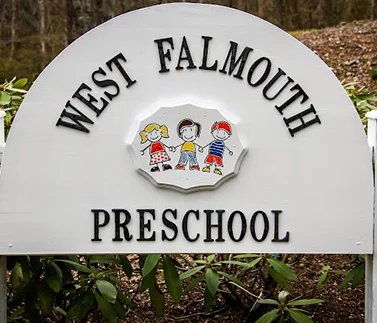

Where curiosity grows.
A parent cooperative that nurtures and develops a child's love of learning, independence and creativity, in our very own little red one-room schoolhouse.

A warm, caring and cozy place where kids can be kids
West Falmouth Preschool is a non-profit, Early Education and Care-licensed school for children between the ages of 3 and 5 years old.
Certified teachers and dedicated parents work together to provide a positive learning environment where children are encouraged to create, explore, investigate, problem solve, experiment, and share.
Read moreChildren here are encouraged to…
- create
- explore
- investigate
- problem solve
- experiment
- share
Mornings of learning, afternoons of play
Morning Program
West Falmouth Preschool offers families a three, four or five-day preschool program, from 9:00 a.m. to 1:00 p.m. with lunch. A child must be 3 years old by September 1 to enroll.
Read more →Stay & Play
An extension of our Morning Program until 3:00 p.m. that focuses mainly on enhancing social development. When the weather is nice, much of the time is spent outdoors on our fully-fenced playground.
Read more →Parents are part of the school
Families help in the classroom, join the fall and spring clean-ups, take part in our main annual fundraiser and elect the Executive Committee that runs the school day to day. It keeps our school small, close-knit and full of familiar faces.
How our co-op worksA little red schoolhouse, built by a community
In 2004 and 2005, parents, teachers and local businesses raised the roof on our very own one-room schoolhouse, just around the corner from the West Falmouth Library, complete with a cupola and an antique brass bell.
Read our storyCome see the little red schoolhouse
We'd love to meet you and your child. Call or email us to ask about enrollment.